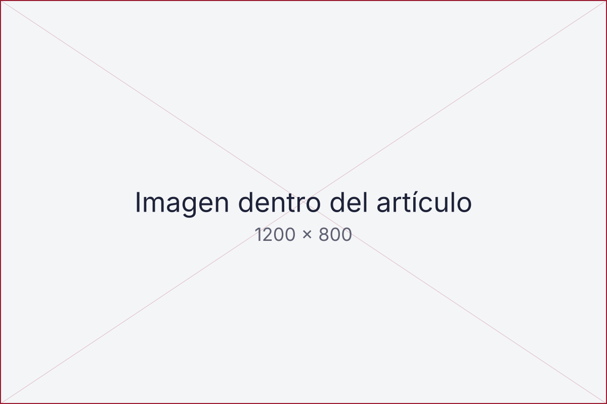

El deporte como política de Estado
Sin continuidad presupuestal ni metas medibles, cada gestión vuelve a empezar de cero. Propongo tres acuerdos mínimos que deberían sobrevivir a cualquier cambio de gobierno.

Cada cuatro o cinco años, el deporte peruano vuelve a comenzar. Cambia el gobierno, cambia la presidencia del Instituto Peruano del Deporte, cambian las prioridades y, con ellas, los equipos técnicos que habían empezado a entender el problema. Lo que no cambia es el diagnóstico: infraestructura subutilizada, federaciones con gobernanza frágil y un alto rendimiento que depende de la voluntad individual de cada atleta más que de un sistema.
Durante mi gestión al frente del IPD administramos activos e infraestructura deportiva pública por más de S/ 2,000 millones. Esa cifra, enorme en papel, pierde valor con cada año en que una sede no tiene presupuesto de mantenimiento ni un operador definido. El problema no es de recursos. Es de continuidad.
Tres acuerdos que deberían sobrevivir a cualquier gestión
Una política de Estado no es un documento firmado con solemnidad. Es un conjunto reducido de compromisos que ningún gobierno siguiente puede desmontar sin pagar un costo político visible. Propongo tres.
1. Presupuesto plurianual con metas públicas
El gasto en deporte debe programarse a cinco años, con indicadores que cualquier ciudadano pueda consultar: número de niños en programas de masificación, sedes con operador asignado, medallas en ciclo olímpico y, sobre todo, porcentaje de ejecución. Si la meta no se cumple, la explicación debe ser pública antes de aprobar el siguiente presupuesto.
2. Legado definido antes de construir
Ninguna obra deportiva debería licitarse sin que exista un plan de uso posterior firmado por quien la va a operar. Lo aprendimos preparando los Juegos Bolivarianos Ayacucho-Lima 2025 y lo aplicamos al diseño de Lima 2027: la pregunta no es cuánto cuesta construir, sino quién paga la luz el día después de la clausura.
3. Gobernanza federativa con estándares mínimos
Las federaciones reciben fondos públicos y, por tanto, deben rendir cuentas con los mismos estándares que cualquier entidad del Estado: estados financieros auditados, elecciones con calendario fijo y límites de reelección. No se trata de intervenirlas, sino de condicionar el financiamiento al cumplimiento.
La masificación, la profesionalización y el alto rendimiento son los pilares fundamentales para lograr la verdadera transformación del deporte en el Perú.
Sergio Ludeña Visalot
Lo que muestran los números
La siguiente tabla resume, de manera ilustrativa, cómo se comporta la ejecución presupuestal cuando existe un plan plurianual frente a cuando se programa año a año. Son valores de ejemplo para el prototipo; en la publicación final se reemplazarán por cifras oficiales.
| Indicador | Programación anual | Programación plurianual |
|---|---|---|
| Ejecución del presupuesto de inversión | 58 % | 84 % |
| Sedes con operador asignado | 4 de 11 | 10 de 11 |
| Programas de masificación con continuidad | 2 años | 5 años |
| Rotación de equipos técnicos | Alta | Baja |
Por dónde empezar
No hace falta una reforma constitucional. El orden que propongo es el siguiente:
- Publicar el inventario completo de infraestructura deportiva pública con su estado de conservación y su operador actual.
- Aprobar un marco presupuestal plurianual para el sector, con indicadores de resultado y no solo de gasto.
- Condicionar las transferencias a federaciones al cumplimiento de estándares mínimos de gobernanza.
- Crear un consejo consultivo con atletas, gobiernos regionales y sector privado que revise anualmente los avances.

Lo que está en juego
Los beneficios de una política de Estado no se miden solo en medallas. Se miden en:
- Niños y jóvenes con acceso a práctica deportiva regular, lo que reduce costos futuros en salud pública.
- Infraestructura que genera ingresos propios en lugar de consumir presupuesto.
- Atletas que pueden planificar su carrera con reglas estables.
- Confianza de la cooperación internacional y del sector privado para invertir en el deporte peruano.
Si algo he aprendido en más de dos décadas entre la empresa privada y la gestión pública es que las instituciones sólidas no dependen de quién las dirige, sino de las reglas que las sostienen. El deporte peruano merece esas reglas. Puede leer más sobre el enfoque de legado en la nota de prensa sobre Lima 2027 o escribirme a través de la página de contacto.